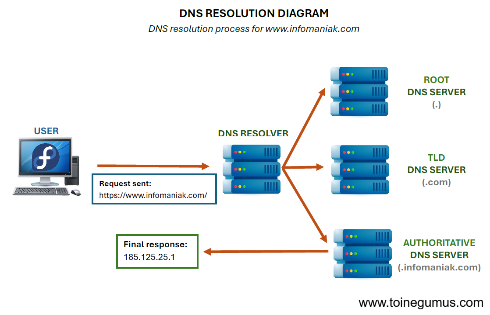
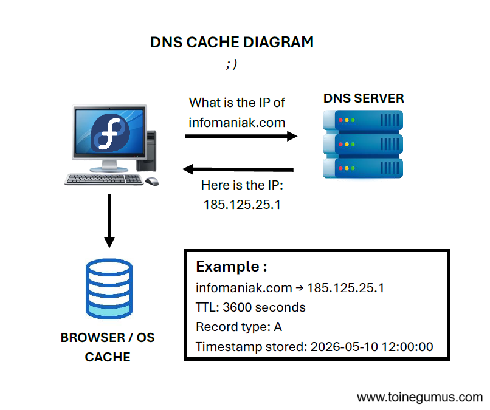
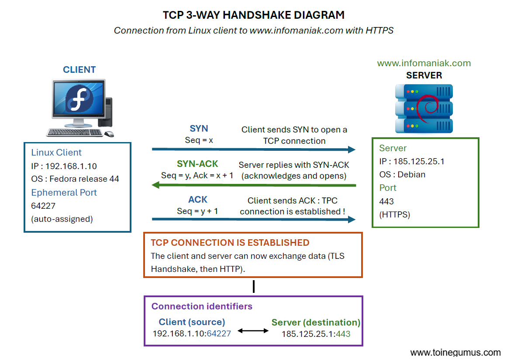
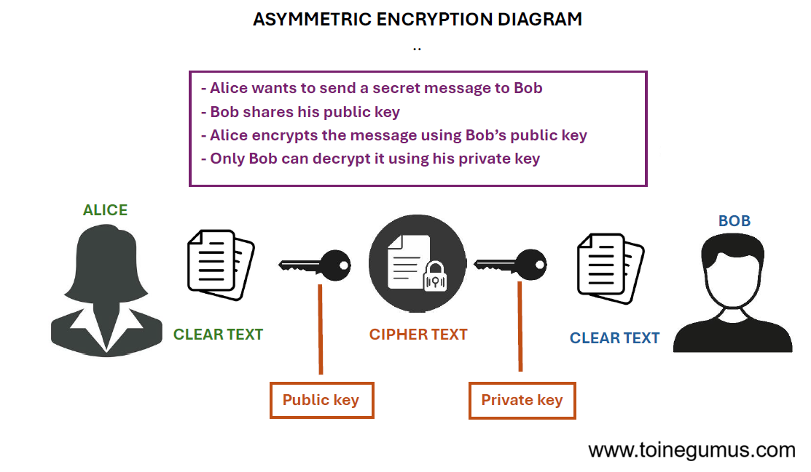
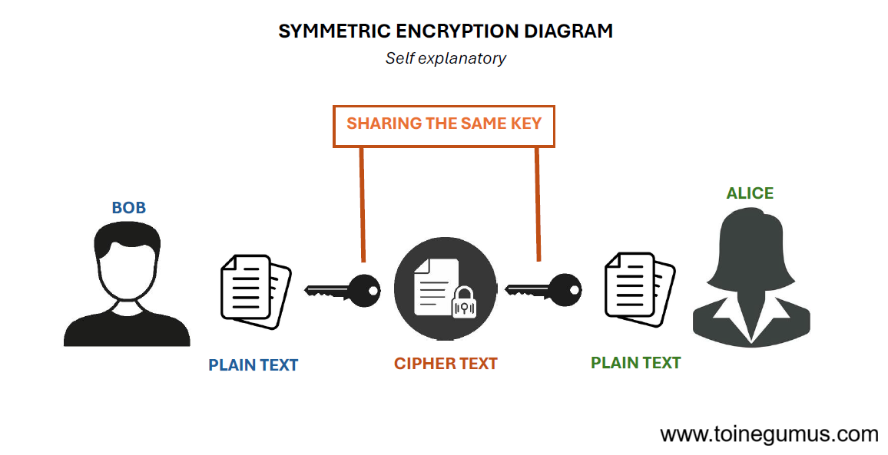
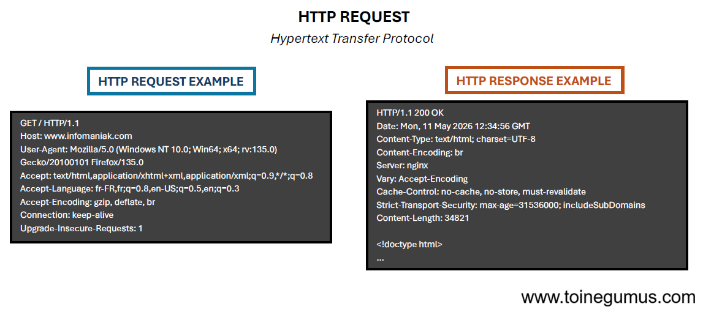
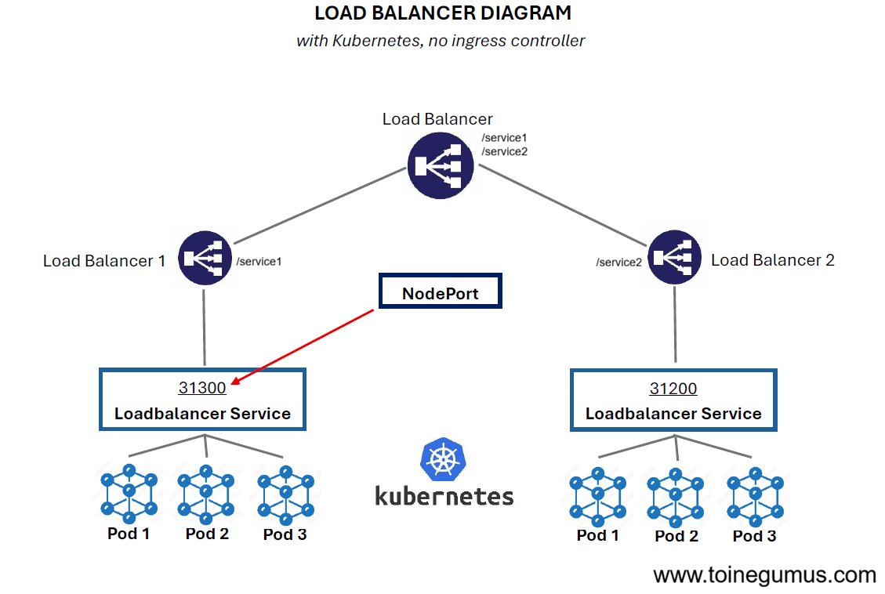
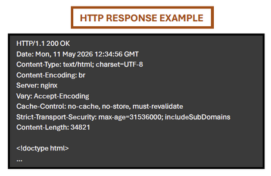
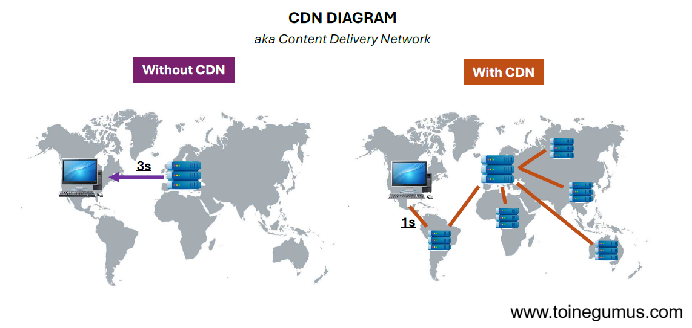

Entering the URL in the browser
The browser receives the entered address:
https://www.infomaniak.com
This action triggers a series of operations to establish an effective network connection.
Local checks (caches and system)
Before querying the network, the system verifies local resources. It first consults the browser's own DNS cache, then the operating system's DNS cache, and finally checks the /etc/hosts file which contains manual mappings.

If the IP address is found locally, the DNS resolution process is bypassed. Otherwise, an external request is initiated.
The role of /etc/resolv.conf
On Linux, the configuration of DNS resolvers is managed by the /etc/resolv.conf
file. This file contains the IP addresses of the servers the system should contact to translate
a domain name into an IP address.

These servers can be provided by the local network via DHCP or configured statically.
For those looking to protect their privacy, European alternatives like Mullvad DNS allow users to move away from default ISP resolvers.

This file determines the starting point for any domain-name-based outgoing communication.
Domain name resolution
The system issues a request to obtain the IP address associated with www.infomaniak.com.
This process follows a precise hierarchical structure:
DNS Resolver (ISP or configured)
The request is sent to the defined resolver. If the resolver does not have the answer in its cache, it begins a recursive resolution. This is where DNS (Domain Name System) comes in, the Internet's phonebook. To learn more about this, check out my article on DNS.

Recursive resolution
The resolver performs the search by querying a sequence of servers. It begins with the root DNS servers (.), then contacts the Top-level domain servers (like the .com TLD), and finally asks the authoritative servers responsible for the specific domain.
DNS hierarchy steps
The root servers redirect to the servers managing the .com extension. These, in
turn, point to the hosting provider's DNS servers, in this case, Infomaniak, which provide the
final public IP address.

Caching
The response is stored at several levels (resolver, system, browser) for a defined duration (TTL) to speed up future lookups.

Establishing the network connection
Once the IP address is identified, the system initializes communication with the remote server.
TCP Handshake (Three-way handshake)
A three-step exchange establishes a reliable connection. The client first sends a SYN packet to request a connection. The server responds with a SYN-ACK to acknowledge and agree to the request. Finally, the client sends an ACK to confirm the connection.

The TCP connection is then active.
Securing via TLS (HTTPS)
For a secure connection, a TLS encryption layer is added.
TLS handshake
The browser verifies the SSL certificate's validity, its certificate authority, and the match with the visited domain.

Key exchange
Using protocols like ECDHE allows the generation of a symmetric session key to encrypt all future exchanges.

HTTP Request
The browser transmits the actual request, including the method, host, and necessary headers:

Routing through the network
The data packet crosses several infrastructures before reaching its destination: the local network, the ISP backbone, Internet exchange points, and finally the destination datacenter.
NAT (Network Address Translation)
The local router translates the system's private IP address into a public IP address usable on the Internet.
Target infrastructure processing (Infomaniak)
Upon arrival at the datacenter:
Load Balancers
They distribute incoming requests across the various nodes of a Kubernetes cluster to optimize performance and ensure high availability.

(I looked a bit more into Kubernetes and its use cases, I think I'll use it since I just got 2 new second-hand computers for my homelab!)
HTTP Response
The server returns the requested content along with a status code (e.g., 200 OK):

The return path
The response follows the reverse path through the Internet to reach the initial system.
Browser rendering
The browser processes the received data by analyzing the HTML code to build the DOM, applying the CSS styles, executing any JavaScript, and loading secondary resources such as images and fonts.

Content Delivery Networks (CDN)
Using a Content Delivery Network (CDN) significantly reduces latency by caching site content as close to users as possible, on servers distributed all around the globe.
Cloudflare is currently one of the most popular CDN providers in the world, but the technology is a web standard offered by many infrastructure players.

ISP: Internet Service Provider (e.g., Starlink, Comcast, Infomaniak).
DNS: Domain Name System. The "phonebook" of the Internet that translates domain names into IP addresses.
IP: Internet Protocol. The unique address identifying every device on a network.
TCP: Transmission Control Protocol. A protocol that ensures reliable and ordered delivery of data.
TLS/SSL: Protocols used to secure communication through encryption.
HTTP/HTTPS: HyperText Transfer Protocol.
NAT: Network Address Translation. A method for multiple devices on a private network to share a single public IP address.
CDN: Content Delivery Network. A network of distributed servers used to speed up content delivery.
Kubernetes: A container orchestration tool used to automate deployment and management of applications.